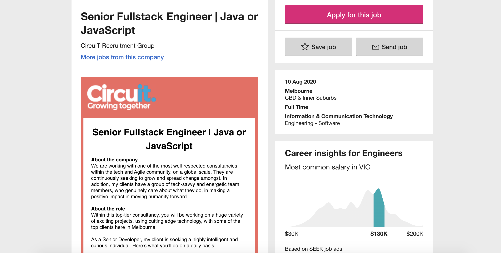

Personal Information

Name: HAOYU FENG
Student Number: s3798551
Email address: s3798551@student.rmit.edu.au
Hi! I am HAOYU FENG from CHINA, a boy born in 1999. You can call me Brook. I do not have religion.
I studied Computer Science and Technology at Beijing Normal University, Zhuhai campus (BNUZ) for two years from 2017 to 2019.
There is the collaboration between RMIT and BNUZ so I choose to study bachelor of Information and Technology at RMIT for two years to get double bachelor degree certificate.
Now I can speak Chinese and English and I hope to master Japanese in the future. Watching anime in pastime leads to my interest in Japanese.
Actually, basketball is my favorite hobby. Russell Westbrook, an NBA star, is my favorite player.
This is why my English name is Brook. Usually I play basketball three times a week.
It helps me keep fits and make like-minded friends. I am willing to try new things and enjoy communicating with people.
The interesting point is that when people discuss the same thing, they often get different opinions and perspectives.
If you want to get to know me, do not hesitate, let's talk!
Interest In IT

I'm studying Bachelor of Information Technology at RMIT
Q1:What is your interest in IT? When did your interest in IT start? Was there a particular event or person that sparked your interest? Outline your IT experience (if any).
In fact, this is a difficult question to answer, at least I know that I will not feel boring in the process of learning IT knowledge. I had my first computer when I was in kindergarten. From then on, I like playing computer games. Maybe it causes that I always keep interest in computers and IT. Besides, I like mathematics very much, And I like to solve problems with logical thinking. I feel a strong sense of accomplishment when problems are solved. Combined with the two reasons, I prefer IT to other majors. When I choose which major to apply for, I just think IT is suitable for me. But when I started taking IT courses, I found that I became interested in IT. Maybe there is no special occasion or person sparked my interest, just follow my feeling. I just think the process of learning IT is interesting. During the two years in BNUZ, I joined the ACM Association. Teachers and seniors taught me some simple algorithms and data structures, such as Dijkstra algorithm and Binary Search Tree, to solve algorithm problems. I enjoy this time because it gives me satisfaction when I think about problems and solve them.
Q2:Why did you choose to come to RMIT?
As I said, there is a collaboration between my Chinese university and RMIT. But I can also choose to go to Boise State University in the US, Cardiff University in the UK and Saint Mary’s University in Canada. The high ranking of RMIT’IT in the world, superior geographical location and humanized services and facilities attract me. I think I can learn a lot of professional knowledge at RMIT and get in touch with students from all over the world to learn about cultural diversity, enrich my experience and broaden my horizon. RMIT is my best choice
Q3:What do you expect to learn during your studies?
I hope that I can clearly understand the general content and technical requirements of each branch of IT, and find a direction that I am most interested in. Then work hard to become a professional programmer. What's more, I hope to learn a lot of excellent qualities from the teachers.
Ideal Job

URL: https://www.seek.com.au/job/50369508?type=standard#searchRequestToken=b3071063-a662-4652-80c2-5e55a47b9a16
This position is about develop software. The attractive salary and collaborative culture impressed me. I think professional skills and the ability to communicate are the foundation for everyone on the team. And the corporation should reward highly skilled workers with handsome salaries. The attitude and working environment of the company towards employees is what I expect. This is the main reason why I choose it.
Employees in this position are required to master a variety of computer languages such as Java and Python and be proficient in them. In addition, they need to constantly communicate with other team members to share their ideas and get new inspirations. They also need to be sensitive to product development in order to continuously optimize product performance.
So far, I have only learned the basics of computer languages, so I do not have the ability of software development. And I do not have any internship experience.
In order to be competent for this kind of work in the future, I need to keep learning professional knowledge and find relevant internships in holidays to accumulate work experience.
Personal profile
The TypeFinder Personality Test:https://www.truity.com/personality-test/17335/test-results/24809149
The results of the test: You are analytical and objective, and like bringing order to the world around you. When there are flaws in a system, you see them and enjoy the process of discovering and implementing a better way. You are assertive and enjoy taking charge; you see your role as that of leader and manager, organizing people and processes to achieve goals.
Learning style test:
http://www.educationplanner.org/students/self-assessments/learning-styles-quiz.shtml?event=results&A=5&V=5&T=10
The results of the test:You are a Tactile learner! You learn by touching and doing. You understand and remember things through physical movement. You are a "hands-on" learner who prefers to touch, move, build, or draw what you learn.
The Big Five Personality Test:
https://www.truity.com/personality-test/17315/test-results/24810942
The results of the test:
Openness (56%);
Conscientiousness (48%);
Extraversion (52%);
Agreeableness (65%);
Neuroticism (27%)
Q1:What do the results of these tests mean for you?
They helped me understand myself more clearly. Sometimes I often think about what kind of person I am, and these results are vividly described in words, giving me a clear understanding.
Through these test results, I can also find my own shortcomings. It also helps me to improve myself very well. For example, from The TypeFinder Personality Test, I found that I had the insight to find inefficiency and was willing to make plans to change the status in quo. However, from The Big Five Personality Test, I find that I am easily attracted by many factors and thus cannot stick to my plan. So, at this point, I will try to solve the problem.
Q2:How do you think these results may influence your behavior in a team?
As for me, I will use my strengths and avoid procrastination. And what I need to do is share these results with my teammates in order for them to know more about me and to work together more effectively. For example, the Myers-Briggs test shows that I am an analytical and objective person who is willing to take responsibility. Therefore, In the group cooperation, I am willing to share my own opinions and pay more for the group. The online learning Style test shows that I am a tactile learner, so I should improve my work efficiency by understanding real objects. The Big Five Personality test shows that I am a moderately open person, so I am also willing to listen to others' opinions and connect everyone together to improve the cohesion of the group. I have the confidence to make my team more united and efficient.
Q3:How should you take this into account when forming a team?
I think everyone should share their test results with others so that we can match the ideal teammate. This leads to a positive and friendly team atmosphere in which everyone can work together to increase productivity. The tests show that I am a person who like rational analysis and solving problems through logical thinking, and I have a strong sense of responsibility. I prefer to form a team with people with similar personalities, so that when we face problems, it is easier for us to unify the direction and make efforts for it. I believe that such a team must be efficient and harmonious.
Project idea
Overview
Intelligent traffic command center is a kind of monitoring system. It through high-tech traffic information, traffic management, transportation, public transportation field and so on all aspects of travel and transportation construction whole process management regulation, make the traffic system at the regional, urban and even greater range of time and space perception, interconnection, analysis, forecast and control ability, in order to fully guarantee the traffic safety, traffic infrastructure efficiency, improve system efficiency and management level, for the flow of public transport and sustainable economic development of the service.
Motivation
With the rapid economic development and over-rapid vehicle growth, the original balance of traffic supply and demand has been broken. On the contrary, the improvement of urban infrastructure, traffic management facilities and management capacity cannot keep up with the development speed of traffic demand. The defects and disadvantages of the original infrastructure have been constantly exposed, and the scientific and technological level of traffic management has become increasingly inadequate. This leads to frequent car accidents in cities, which seriously affect people's travel and threaten people's personal safety.
Description
This project needs to be combined with the monitoring screen of the urban traffic monitoring center. Supported by the Internet of Things, cloud computing, big data and other new-generation information technologies, it has led the implementation of a series of comprehensive transportation projects, including the transportation information disposal center, the transportation information resource cloud platform, and the integrated Traffic command center. In order to give full play to the real-time monitoring and decision analysis functions of the command center, the index items of the large-screen display system are sorted out to improve the real-time monitoring performance of the system.
Integrated vehicle management and dispatching system, based on the big dipper, the information such as GPS, GIS, wireless communication means, through the establishment of private or public information application platform, to regulatory authorities and enterprises realize positioning management, implementation of transport, goods and personnel condition monitoring, improve operational efficiency, avoid dangerous, to improve the emergency response capacity;
Through real-time data collection of urban roads, highways and other traffic networks, traffic management departments can release traffic information in real time, carry out reasonable traffic guidance, and improve the traffic efficiency and utilization rate of road traffic.
Each map module in the monitoring platform can be displayed in the form of ordinary map and satellite map. It includes the passenger and cargo volume information of highway, railway, waterway and civil aviation, as well as the passenger and cargo volume proportion chart of each mode of transportation.
To deal with emergencies timely and quickly, and make full use of the existing traffic infrastructure and thoroughly analyze the traffic congestion situation to formulate traffic construction plans and countermeasures.
Comprehensively display the road, regional road conditions, traffic jam points and various statistical information in urban traffic. Click the road to view the basic information and congestion information of the road. The monitoring graph can display the real-time road condition of road congestion, the congestion index of the city, the broken line chart of today's congestion, and the circle chart of traffic status of morning and evening rush hours. It provides great convenience for the transportation center.
Tools and Technologies
Tools that may be needed for this project include programming software such as Java and Python, databases such as Mysql, project frameworks such as Springboot, service deployment such as Docker, and data processing such as Storm, Redis, and Kafka
Skills Required
This project may need to use the technology include: system development technology, algorithm, database statement, dynamic data processing technology, the overall framework of the project
Outcome
Wisdom covers all transportation mode of transportation, and consider transport system is dynamic, and the interaction of all factors (people, car, road and environment), after the application of intelligent traffic can effectively improve the efficiency of transportation, can reduce traffic congestion and accident, we can according to relevant data to establish perfect public transport network construction and improvement of urban road network. This will make it safer for citizens to travel and protect their personal safety.